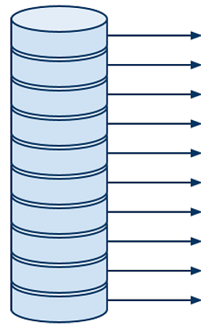
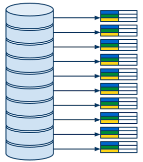
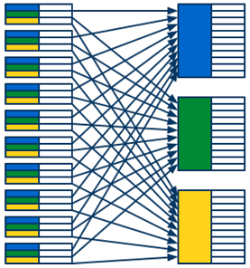
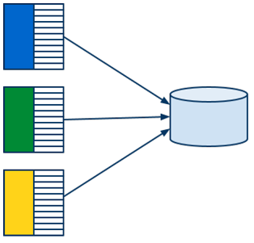
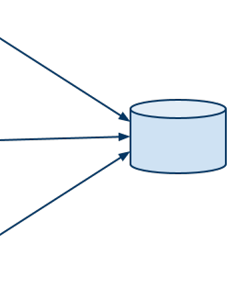

Agenda
- Other GAE Services
- MapReduce & GAE MapReduce API
- Google Big Query service
- Miscellaneous
- Discussion on HWs.
- Concluding remarks
Other GAE Services
What else can be done with GAE
MapReduce in General
- wiki, paper
- Computing model for processing of large data sets
- Distributed, parallel, scalable, ...
- General framework for implementing parallel processing
- Goal: Process as much data as possible, as fast as possible
- Used in a lot of Google (and other) products
- Idea:
- Select and read in parallel the data to be processed
- Group the data, that should be processed together
- Process the groups of the data belonging together in parallel
MapReduce Overview
MR Phase 1: Read

- Reads data from storage and passes it to the next phase
- Can run in parallel
- Various forms of input data
- GAE Datastore entities
- Files on a file system
- Entries from a zip archive
- ...
- No user code
MR Phase 2: Map

- Filters and maps raw data input to a list of key-value pairs
- Indicates which values should be processed together
- By assigning the same keys
- Formally —
Map(data) -> list(key, value) - Runs (in isolation) once per each piece of input data
- Highly parallelizeable
- Can exploit data locality
- Local data are passed to local mapper tasks
- Can be scaled
- By increasing the number of parallel mapper tasks
MR Phase 3: Shuffle

- TODO
MR Phase 4: Reduce

- TODO
MR Phase 5: Write

- TODO
MapReduce Summary
MapReduce on GAE
Further Reading
Thank You!